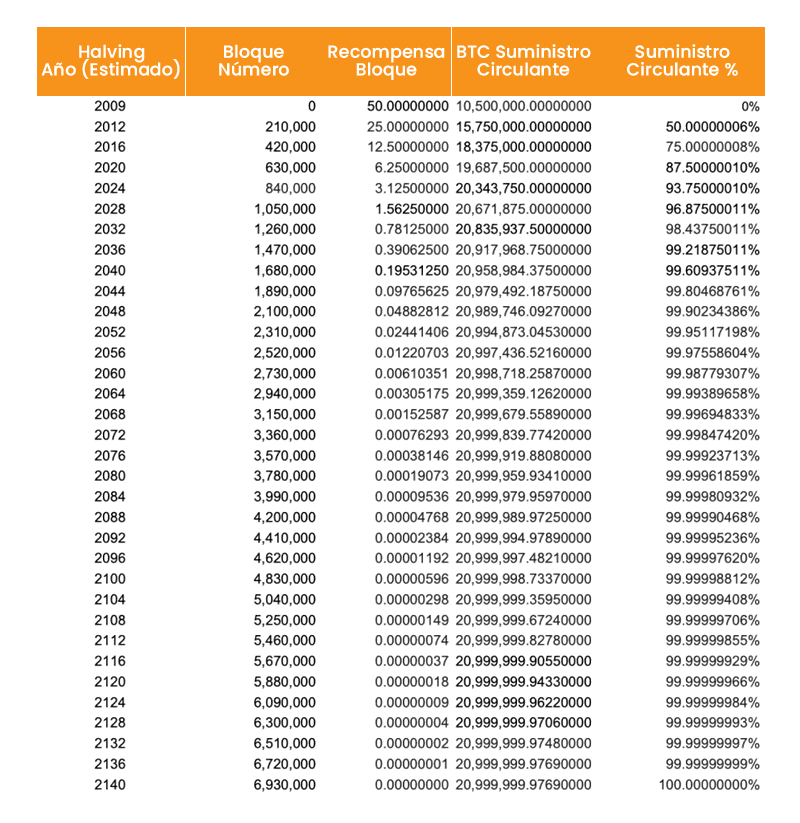

Halving de Bitcoin - ¿Cómo funciona el ciclo de halving y por qué es importante?
Un "bloque" es un archivo que contiene registros de transacciones de bitcoins en la cadena de bloques de Bitcoin. Los "mineros" compiten para añadir el siguiente bloque resolviendo un complejo problema matemático mediante hardware especializado, produciendo un resultado aleatorio de 64 caracteres conocido como "hash", terminando el proceso y bloqueando el bloque para que no pueda ser modificado. Al completar estos bloques, los mineros reciben Bitcoin.
Entonces, ¿cómo funciona el ciclo de halving de Bitcoin? A los mineros se les pagaba 50 BTC por bloque cuando la criptomoneda se estableció inicialmente. Los primeros usuarios pudieron ser tentados a minar la red de esta manera, incluso antes de que fuera evidente el éxito que tendría. El ritmo de creación de nuevos Bitcoin disminuye a la mitad cada 210.000 bloques minados, o aproximadamente cada cuatro años hasta que se hayan minado los 21 millones de Bitcoin.
Según la historia de las fechas de halving de Bitcoin, los tres últimos halving tuvieron lugar en 2012, 2016 y 2020. El primer halving de Bitcoin o división de Bitcoin ocurrió en 2012 cuando la recompensa por minar un bloque se redujo de 50 a 25 BTC.
El evento de halving en el año 2016 redujo los incentivos a 12.5 BTC por cada bloque minado, y a partir del 11 de mayo del año 2020, cada nuevo bloque minado solo genera 6.25 nuevos BTC. En el año 2024, se espera que tenga lugar el próximo halving de Bitcoin reduciendo el incentivo por bloque a tan solo 3.12 BTC. Este sistema continuará hasta aproximadamente el año 2140 cuando se estima será minado el último bitcoin.
